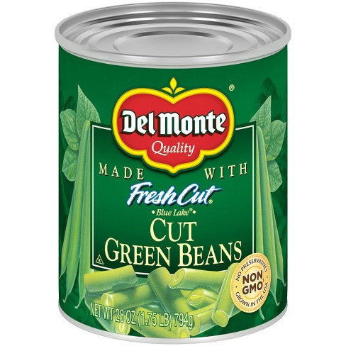

Green Beans

Description
I love green beans, fresh out the can.
Del Monte is the right way to do it.
Ingredients
- 1 Can of Del Monte Green Beans
- 16 oz. pack of bacon
Steps
- Fry your bacon in a pan
- Put the bacon aside and drain the bacon grease into a pot
- Boil the green beans with the bacon grease